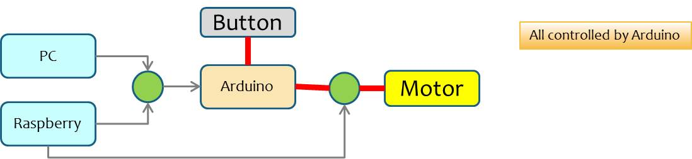
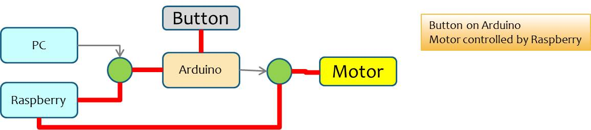
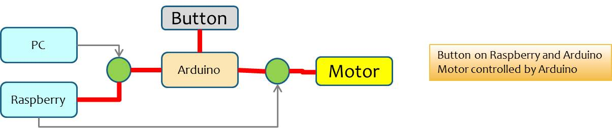
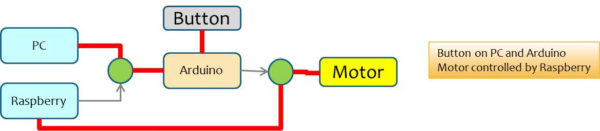
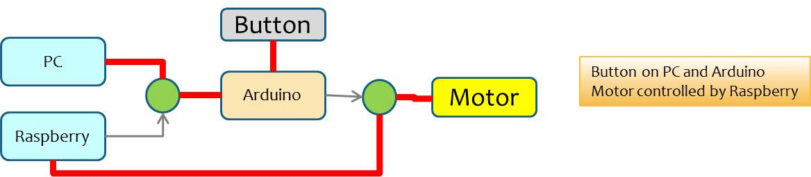

Requirements
- Design and build a MotorDrive software system in which a DC Motor is turned on and off each time a Button is pressed (by an human user).
- The motor should be controlled by a RaspberryPi or by Arduino.
- The button should be managed by using a device different from the motor-cotrol device.
When the motor control wires IN1 and IN2 are connected to the Raspberry-site, the motor is controlled by the Raspberry and the Arduino should be connected either to the Raspberry itself or to a conventional PC. In any case, when the button (controlled by Arduino) is pressed, the motor should run; it should stop as soon as the button is unpressed.
Hardware
See LN98N motor drive
MotorDrive system pyhisical architectures
   

MotorDrive system project architecture
In the project architecture represented by the following interaction diagram, the Arduino board is connected to the Raspberry. We can (un)press the button managed by Arduino and the Raspberry turns off/on the motor. Moreover, the server can accept remote commands via the GUI button on the left of the red line (that represents the network-boundary).
A key poit is that the interfaces are replaced by speech acts (execAction(String cmd)).